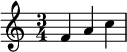

What's Music?
Music, put simply, is the language of musicians. It gives them a way to communicate what pitches to play, how long to play them for, and how loudly they should be played. If we didn't have music, all of our songs would just sound like noise. Once you finish reading this section, you'll be equipped with all the information you need to explore Compose-away and Performance Alley.Most images from Wikipedia, used in accordance with Creative Commons licenses.
Basics
Written music contains several different notations telling you about how to play sounds. A typical staff looks like this: There are five lines and four spaces:
There are five lines and four spaces:
 A clef is added to the staff based on the relative highness or lowness of the notes.
A clef is added to the staff based on the relative highness or lowness of the notes.
- Treble clef
 - high notes
- high notes - Bass clef
 - low notes
- low notes
- A whole note (
 ) is equivalent to 4 quarter notes. In most time signatures (but not all), this would be a whole measure.
) is equivalent to 4 quarter notes. In most time signatures (but not all), this would be a whole measure. - A half note (
 ) is equivalent to 2 quarter notes.
) is equivalent to 2 quarter notes. - A quarter note (
 ) is probably the most common note you'll encounter, and usually takes up 1 beat.
) is probably the most common note you'll encounter, and usually takes up 1 beat. - An eighth note (
 ) equals half of one quarter note. Usually the second most common note, it can be used for faster portions of a song.
) equals half of one quarter note. Usually the second most common note, it can be used for faster portions of a song. - Lastly, a sixteenth note (
 ) is equivalent to a quarter of a quarter note (or half of an eighth note).
) is equivalent to a quarter of a quarter note (or half of an eighth note).
 - This measure has 3 quarter notes ("4" means quarter note) per measure.
- A 6/8 time signature would have 6 eighth notes per measure.
- A 2/2 time signature would have 2 half notes per measure.
Tempo
Tempo defines the speed of a piece of music. It sets a steady beat that repeats for the duration of the piece. Some music can sound completely different if played with the wrong tempo. You can experiment with tempo in Compose-away.Rhythm
Rhythm describes the times in music when there is sound and the times when there isn't (notes and rests). When put together, this forms a pattern that can be reused throughout the piece. Frequently, however, many different rhythms are used.Pitch
Notes are organized into an alphabet, but it only extends from A-G, then loops back to A. The Performance Alley keyboard is a great way to learn more about pitches.Harmony
Harmony is a way of adding texture to a musical piece. Additional notes are played behind the melody to support it and help illustrate a mood. Another type of harmony is when multiple voices are playing. Try out the "Canoe Song" in Performance Alley. Where you see stacked notes, try playing just the bottom ones, and then repeat, playing just the top ones. Notice that the song doesn't sound as rich. But when you play them both together, it sounds pretty cool!Instrumentation
- In Compose-away, you can only compose for one voice.
- In Performance Alley, you can play two or three notes at the same time on the piano (in some cases), but there is still only one piano.
Now It's Your Turn!
There are two interactive activities that you can play with for as long as you want.- Compose-away - Compose your very own piece of music!
- Performance Alley - Try your hand(s) at performing one or more of the three songs provided.